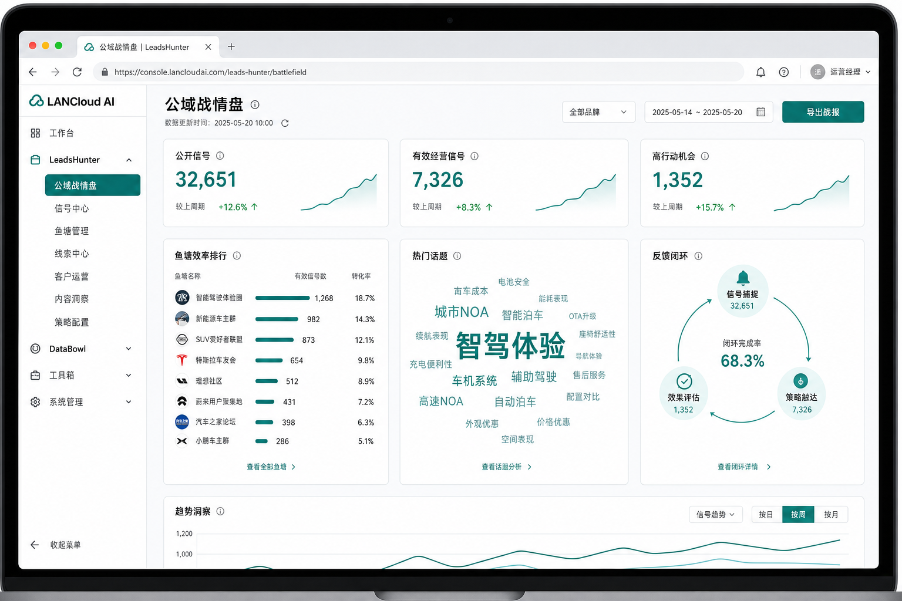
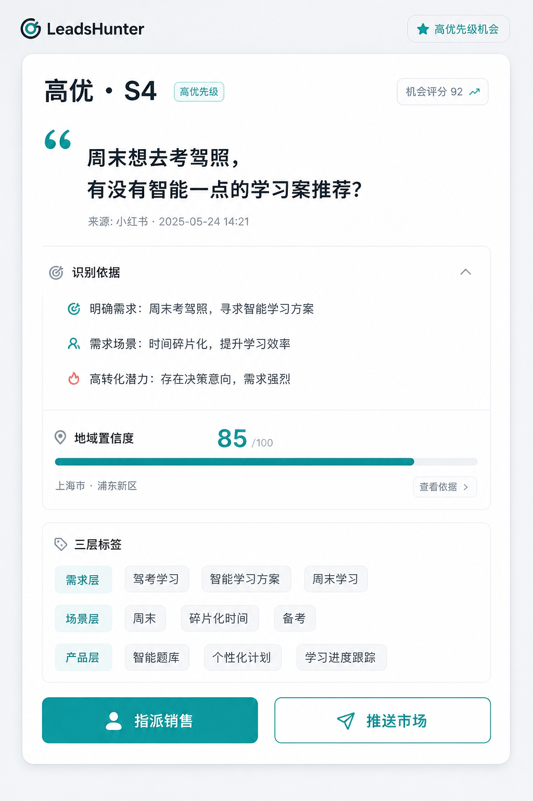
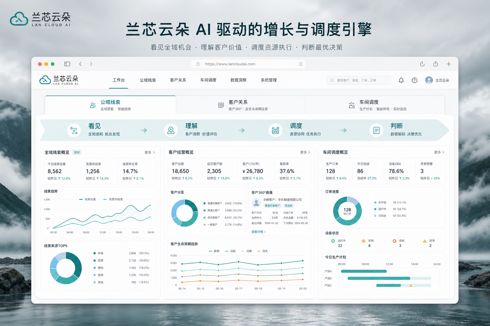
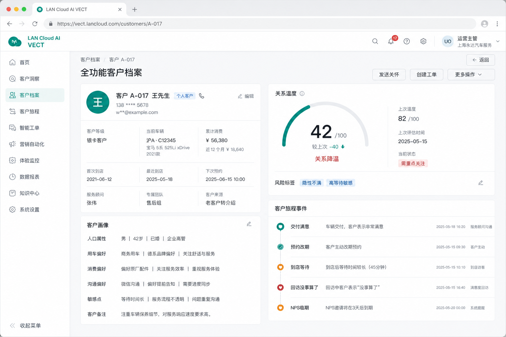
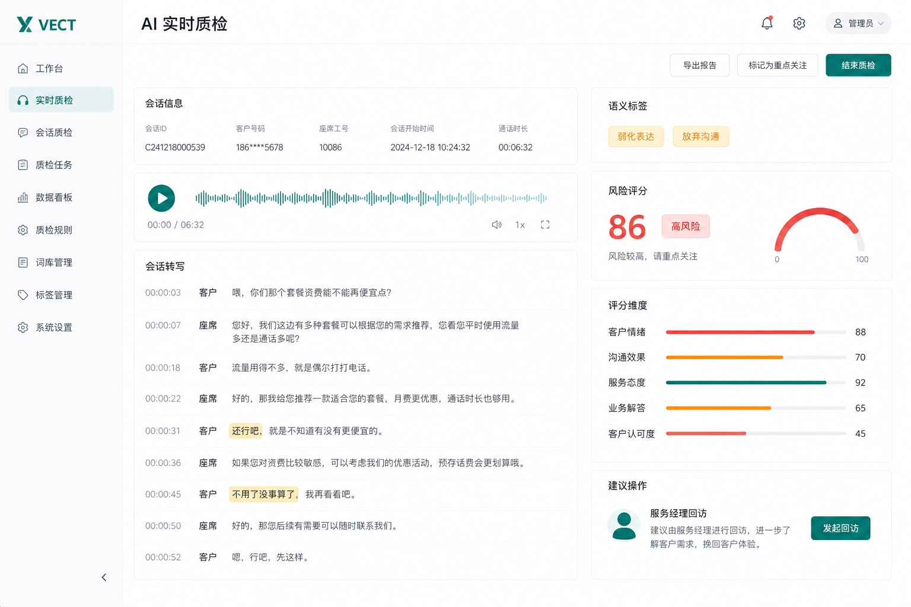
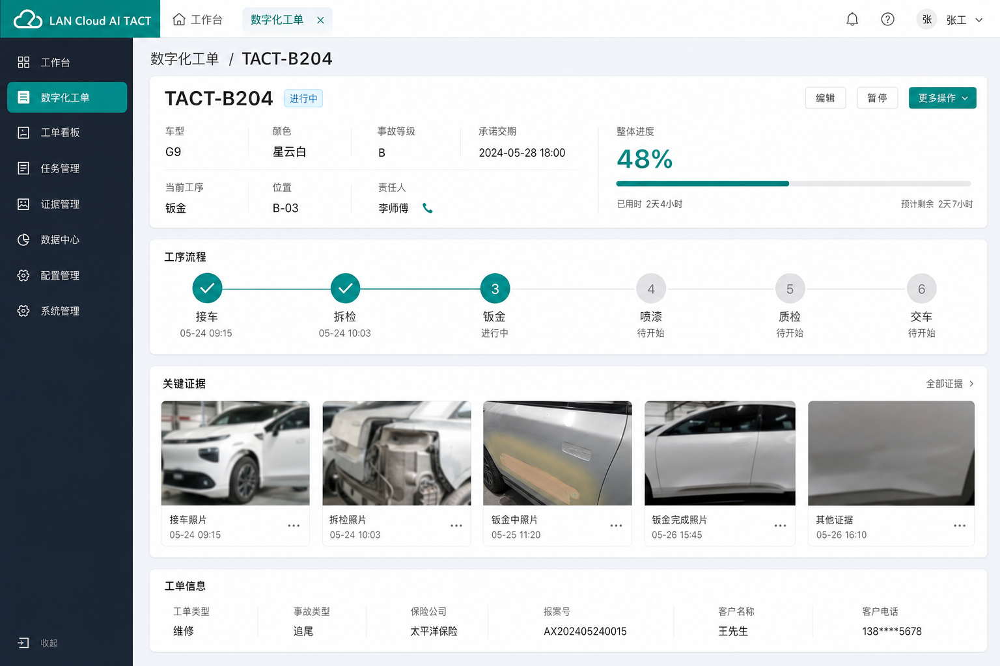
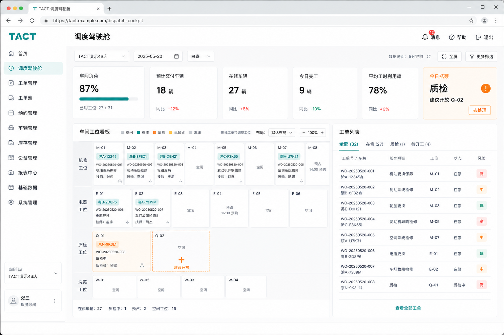

See · LeadsHunter
客户并没有沉默，他只是没在你的 CRM 里说话
从抖音、小红书等公开内容里识别经营信号，完成意向评分、属地分发与飞书交付。生产链路 Mercury 已稳定运行。
- 公域采集 → AI 评分 → 线索入池
- 多租户组织与属地化指派
- 训练场 Skill 可同步回生产



业务规则 × 多维表格 / 事件系统 × AI · 先在真实门店验证，再契约先行地 SaaS 化
Products
从公域机会到客户关系，再到车间交期——把动作送到正确的人手里。
See · LeadsHunter
从抖音、小红书等公开内容里识别经营信号，完成意向评分、属地分发与飞书交付。生产链路 Mercury 已稳定运行。


Understand · VECT
把预约、工单、回访、NPS 拼成一段关系：全功能档案、AI 质检、雷达预警与责任动作闭环。飞书验证完成，SaaS 筹备中。


Orchestrate · TACT
数字工单建立唯一可信状态；可解释派工、时效云图与主动调度。飞书验证后，Phase 0 契约与 SaaS 工程已启动。


Method
VECT 与 TACT 证明：任何管理流程都能拆成对象、状态、责任、时点、证据与风险。
客户、车辆、订单、门店
当前在哪一步，下一步是什么
谁负责，谁协同，谁审批
何时开始，何时截止，是否超时
记录、照片、录音、结果
规则预警、AI 判断、升级条件
Beliefs
Open Source
公开仓库欢迎阅读与讨论；生产链路保持私有。训练场与契约仓是理解兰芯的最佳入口。